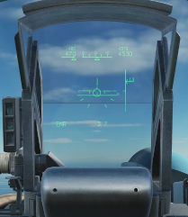

Démarrage des avions
Avant de voler il faut démarrer l'avion. Chaque avion à sa procédure de démarrage qu'il faut respecter sous peine de panes ou d'incapacité
à décoller. Au sol il faut aussi réarmer son avion et gérer carburant.
Il faut aussi
vérifier le bon fonctionnement des commandes de vol principales ainsi que le bon fonctionnement de moteurs. Toutes ces vérifications sont rappelé dans une checklist.
Ici nous allons voir comment démarrer les avions rapidement
sans faire tous les tests.
Tous les raccourcis clavier donné sont les raccourcis par défaut.
Démarrage du Su-33
Cette avion Russe est un avion non-clickable. Le démarrer est donc assez facile.
Avant de démarrer les moteurs il faut allumer le système électrique de l'appareil. Pour l'allumer il suffit d'appuyer sur MajD+l.
Une fois allumer, le hud (head up display) devrai s'allumer comme sur l'image si dessous.

{kind=link}
Maintenant que le système électrique est démarré il faut vérifier que la manette des gaz est au neutre (à zéro). Maintenant nous pouvons démarrer le moteur droit en appuyant sur MajD+Debut (ou MajD+Start). Un voyant vert va apparaître. Il faut attendre qu'il disparaisse avant de passer au démarrage du moteur gauche. Une fois le voyant éteint il faut appuyer sur AltD+Debut (ou Altd+Start) pour démarrer le moteur gauche.
Maintenant il faut sortir les volet en appuyant sur f avant de décoller.
F/A-18C Hornet
Cette avion Américain est un avion clickable. Il est bien plus long à faire démarrer que le Su-33.
Ici nous avons un tutoriel très complet pour la mise en route du F/A-18C avec tous les tests normalement nécessaires pour la mise en route.
Si vous voulez en savoir encore plus cliquez ici pour télécharger le manuel du F/A-18C Hornet. C'est un manuel extrêmement complet de 499 pages en anglais.